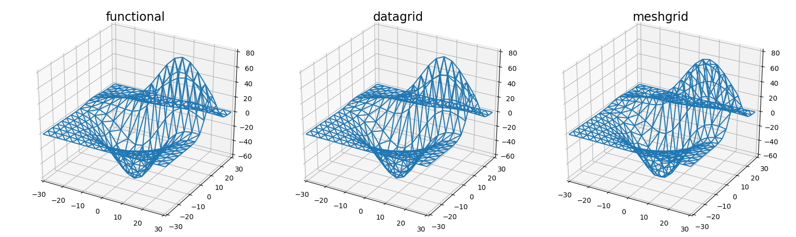

Functional, Datagrid and Meshgrid wireframe plots¶
This is a comparison among wireframe plots constructed from either functional, Datagrid or Meshgrid methods for 3D visualization of data values at xy positions.
Surface geometry is that taken from the matplotlib 3D wireframe plot example.
Functional
- Pros
- Most useful when data can be represented functionally.
- No need for an additional data arrays.
- Function in native coordinates for planar, polar, cylindrical or spherical coordinates.
- Images may be premapped to the surface.
- Cons
- The starting normalized coordinates require scaling.
- Only predefined grids may be used, controlled only by rez.
Datagrid
- Pros
- Data is automatically normalized and only 2D array is needed.
- Data surface is smoothed at higher rez.
- May be used for planar, polar, cylindrical or spherical objects.
- May be placed within in a surface viewport.
- Images may be premapped to the surface.
- Cons
- The starting normalized coordinates may require scaling.
- Only predefined grids may be used, controlled only by rez.
Meshgrid
- Pros
- Grid resolution is set by the resolution of the data.
- Grid scaling is automatic.
- Cons
- Only PlanarSurface objects can be used in xyz coordinates.
- Image mapping to the surface is not applicable.
- Surface coloring, shading and highlighting should be executed before and after normalization scaling.
Note
These plots add the surface property edges to the axis3d, not the surface. For wireframe plots with variations in edge color, a surface with transparent faces should be used as demonstrated in the Wireframe Plots example.
An additional comparison between datagrids and meshgrids is in the Datagrid and Meshgrid surfaces example.
import numpy as np
import matplotlib.pyplot as plt
from mpl_toolkits.mplot3d import axes3d
import s3dlib.surface as s3d
#.. Matplotlib Examples: Wireframe plots
# 1. Define function to examine .....................................
def get_normalized_test_data(xyz,delta=0.05):
x,y,z = xyz
X,Y = 3*x, 3*y
Z1 = np.exp(-(X**2 + Y**2) / 2) / (2 * np.pi)
Z2 = (np.exp(-(((X - 1) / 1.5)**2 + ((Y - 1) / 0.5)**2) / 2) /
(2 * np.pi * 0.5 * 1.5))
Z = Z2 - Z1
return x,y,Z
X, Y, Z = axes3d.get_test_data()
# 2. Setup and map surfaces .........................................
rez=3
# method 1: direct functional definition..............
norm_surface = s3d.PlanarSurface(rez, basetype='oct1')
norm_surface.map_geom_from_op( get_normalized_test_data )
norm_surface.transform(scale=[30,30,500])
# method 2: datagrid method .........................
data_surface = s3d.PlanarSurface(rez, basetype='oct1')
data_surface.map_geom_from_datagrid( Z )
data_surface.scale_dataframe(X,Y,Z)
# method 3: meshgrid method .........................
p = int(Z.shape[0]/16)
region = np.s_[::p,::p]
x,y,z = X[region], Y[region], Z[region]
mesh_surface = s3d.PlanarSurface.meshgrid(x,y,z, True)
# 3. Construct figure, add surface, plot ............................
surfaces = [ [norm_surface, 'functional'],[data_surface, 'datagrid'], [mesh_surface, 'meshgrid'] ]
fig = plt.figure(figsize=plt.figaspect(0.3))
for i in range(3) :
surface = surfaces[i]
ax = fig.add_subplot(1,3,i+1, projection='3d')
ax.set(xlim=(-30,30), ylim=(-30,30), zlim=(-60,80) )
ax.set_xticks(np.arange(-30, 40, 10))
ax.set_yticks(np.arange(-30, 40, 10))
ax.set_zticks(np.arange(-60, 90, 20))
ax.set_title(surface[1], fontsize='xx-large')
ax.add_collection3d(surface[0].edges)
fig.tight_layout()
plt.show()